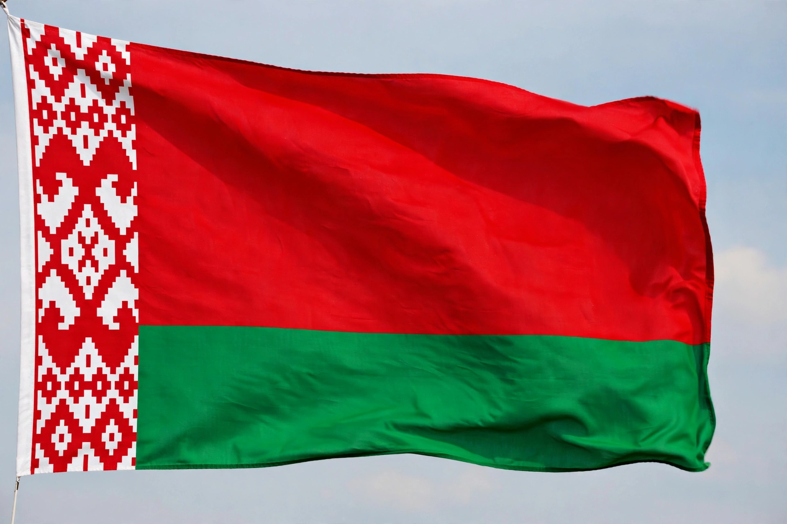

| Republic of Belarus | |
 Flag of Belarus | |
| Capital | Minsk |
|---|---|
| Official languages | Belarusian and Russian |
| Government | Unitary presidential republic |
| Independence | 25 August 1991 (from the Soviet Union) |
| Population | approx. 9.2 million |
| Area | 207,600 km² |
| Currency | Belarusian ruble (BYN) |
Belarus, officially the Republic of Belarus, is a landlocked country in Eastern Europe, bordered by Russia, Ukraine, Poland, Lithuania, and Latvia. Its capital and largest city is Minsk. With about 9.2 million inhabitants over 207,600 square kilometres, it is the largest completely landlocked European country by area after Kazakhstan's European part. Over 40% of its territory is forest, including the primeval Białowieża Forest shared with Poland.
The lands of Belarus were part of Kievan Rus', then the Grand Duchy of Lithuania and the Polish–Lithuanian Commonwealth, before passing to the Russian Empire in the partitions of Poland. After a short-lived Belarusian People's Republic in 1918, the Byelorussian SSR became a founding republic of the Soviet Union in 1922. The country suffered catastrophic losses in the Second World War, losing roughly a quarter to a third of its population. Belarus declared independence as the USSR dissolved in 1991.
Since 1994 Belarus has been led by President Alexander Lukashenko, whose rule is widely described as authoritarian; elections are not considered free or fair by Western observers, and mass protests followed the disputed 2020 election. Belarus maintains a close alliance with Russia through the Union State, hosts Russian military facilities, and allowed its territory to be used in the 2022 invasion of Ukraine, drawing extensive sanctions.
Belarus retained much of its Soviet-era state-owned industrial base, producing tractors (Belarus/MTZ), trucks (MAZ), potash fertilisers, and refined petroleum products; a growing IT sector centred on Minsk's Hi-Tech Park became notable before 2020. Both Belarusian and Russian are official languages, though Russian predominates in everyday use. Cultural symbols include the European bison of Białowieża, flax, and the national ornament patterns reproduced on the flag.